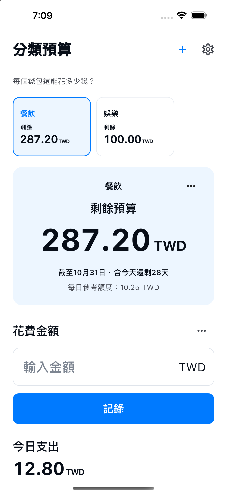

自訂錢包名稱，並設定預算。

使用方法
分預算，記花費，看剩餘。
選擇錢包，記錄花費的金額。
在歷史紀錄中修改紀錄或新增退款。
手動開始下一期預算，保留過去的紀錄。
只保留必需功能
錢包自由設定。
管理保持簡單。
- 錢包名稱
- 為餐飲、娛樂、日用品等用途設定喜歡的名稱和預算，預設週期為本月。
- 剩餘預算
- 剩餘預算 = 設定的預算 − 已記錄的支出 + 退款。這是依輸入記錄計算的參考值，不代表銀行或實際錢包的餘額。其他錢包的餘額不會抵銷超支。
- 10種語言 · 10種貨幣
- 日本語 / English / 한국어 / 简体中文 / 繁體中文 / Español / Français / Deutsch / Italiano / Português (Brasil)
JPY / USD / EUR / KRW / CNY / TWD / BRL / GBP / CAD / AUD
儲存在裝置上的紀錄
無需註冊帳號。
錢包名稱、預算、幣別、期間，以及支出和退款的金額、日期、備註，都儲存在此應用程式專用的裝置本機資料庫中，用於顯示各錢包的預算和紀錄。
不需要註冊帳號。應用程式沒有將紀錄傳送至開發者伺服器的功能，也沒有廣告、使用情況分析或追蹤。系統備份或裝置移轉可能包含這些資料，但不保證能夠還原。 可以在歷史紀錄中刪除支出和退款。收起錢包會保留紀錄。解除安裝可能刪除裝置內的紀錄。系統備份請在裝置或帳號設定中管理。
隱私權政策 →